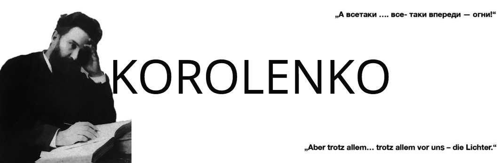

Wladimir G. Korolenko – 100. Jahrestag seiner Kritik am Weg der Bolschewiki

In dem russischen Schriftsteller und Humanisten Wladimir G. Korolenko (1853 - 1921) hatte die damals noch junge Revolution in Russland einen Befürworter, aber auch einen ihrer schärfsten Kritiker an den Methoden der Bolschewiki zur Errichtung einer sozialistischen Gesellschaft.
Ohne Freiheit gibt es keine Gerechtigkeit - einer der Leitgedanken Korolenkos zur Erklärung, dass das sozialistische Experiment zum Scheitern verurteilt ist, wenn die Bolschewiki ihre Politik gegenüber ihrer Bevölkerung nicht grundlegend ändern.
Korolenko sollte Recht behalten, wie sich im späteren Zusammenbruch des „Realen Sozialismus“ zeigt.
Da es 1920 Korolenko, wie auch anderen russischen Schriftstellern, schon nicht mehr möglich war, seine Meinung zu veröffentlichen, nahm er das Angebot zum Briefwechsel mit dem damaligen Volkskommissar für Unterrichtswesen und Volksaufklärung, Anatoli Lunatscharski, an. Dieser hatte Korolenko zugesichert, dessen Briefe sowie seine eigenen Entgegnungen dazu zu veröffentlichen.
Erst 1922 wurden Korolenkos Briefe in Paris im Verlag „Sadruga“ erstmals veröffentlicht.
In der Sowjetunion wurden Korolenkos Briefe erst kurz vor ihrem Niedergang in der Zeitschrift „Nowy Mir“, Heft 10, 1988, erstmals gedruckt. Die DDR brachte die Briefe in Übersetzung ebenfalls kurz vor ihrem Ende 1990 in der Zeitschrift „Sowjetliteratur“, Heft 1, heraus. Ein Nachdruck dieser Übersetzung ist in dem Buch über W. G Korolenko „Späte Begegnungen“, ISBN 978-3-00-038520-9 zu finden.
Korolenko war durchaus ein Befürworter der russischen Revolution, denn er unterstützte jeden demokratischen Fortschritt. Aber Gewaltherrschaft und den Terror der Bolschewiki lehnte er entschieden ab, wie in den kurzen Auszügen aus den Briefen zu ersehen ist.
1. Brief - 19. Juni 1920
Hier setzt Korolenko sich ausführlich mit den von den Bolschewiki eingeführten wahllosen Erschießungen ohne gerichtliche Überprüfung auseinander, was selbst im Zarismus und anderswo eine seltene Ausnahme war. Er stellt die später wiederholte Forderung nach Einstellung der Todesstrafe, die als Schande für das neue System in die Geschichte eingehen wird.
Er schreibt: „Jeder hat das Recht zu wissen, wer des Lebens beraubt wird, aus welchem Grund und von wem das Urteil ausgeht. Das ist das mindeste, was man von den Machthabern verlangen kann…
…die Entwicklung zum Sozialismus müsse sich auf die besten Seiten der menschlichen Natur stützen, was Mut im Kampf und Menschlichkeit auch gegenüber dem Gegner voraussetzt.“
2. Brief – 11. Juli 1920
Korolenko äußert sich hier zu den objektiven und subjektiven Voraussetzungen für eine sozialistische Revolution.
Aus einer Diskussion am Rande der Weltausstellung in den USA, die Korolenko 1893 besuchte, berichtet er, warum die amerikanischen Sozialisten und selbst Friedrich Engels den Kapitalismus in den USA noch nicht reif für eine soziale Umwälzung halten.
„Es bedarf vieler Vorbedingungen – politischer Freiheit, Aufklärung, Herausbildung neuer gesellschaftlicher Verflechtungen in den Institutionen und den menschlichen Sitten. Kurzum, es muss das vorhanden sein, was mein … Freund … Gherea Dobregeanu, die 'objektiven und subjektiven Voraussetzungen der sozialistischen Umwälzung' nannte.“
Aber es gibt auch die Meinung, je weniger objektive und subjektive Voraussetzungen in einem Land vorhanden sind, desto reifer sei es für die soziale Revolution. „Man nenne dies Argument, wie man will, nur mit Marxismus hat es nichts zu tun.“
Die objektiven und subjektiven Bedingungen dafür, von denen Korolenkos Freund, der rumänische Marxist Gherea Dobrogeanu spricht, sind in Russland mit großem Analphabetentum und mit geringer demokratischer Erfahrung am wenigsten vorhanden.
So wirft Korolenko die Frage auf, woran es wohl liegt, dass die am weitesten entwickelten Länder wie England, Frankreich, Amerika und auch Deutschland der russischen Revolution nicht folgen, was Lenin in einem bitteren Brief an eine englische Arbeiterdelegation mit Entfremdung und Enttäuschung quittiert.
3. Brief – 04. August 1920
Auch hier protestiert Korolenko vehement gegen die willkürlichen Erschießungen. Schon unter der Zarenherrschaft hatte er gegen die Todesstrafe protestiert, aber auch unter den neuen Machthabern sieht er sich gezwungen gegen ungesetzliche Erschießungen und Ermordungen selbst Minderjähriger vorzugehen. Eine zuvor verkündete und dann rückgängig gemachte Amnestie führte zu weiterem Vertrauensverlust der Bevölkerung in die neue Sowjetmacht.
Korolenko betrachtet in diesem Brief die historische Entwicklung Russlands von der blinden Anbetung der Selbstherrschaft und völliger politischer Indifferenz zum abrupten Übergang zum Kommunismus, d.h. zu einer kommunistischen Regierung. Allerdings blieben Sitten, Bräuche und Bildung ohne erforderliche Entwicklung. „Von der Diktatur des Adels (dem „Rat des vereinigten Adels“) ging man zur Diktatur des Proletariats über. Ihr, die Partei der Bolschewiki habt sie ausgerufen und geradewegs aus dem Absolutismus kam das Volk zu euch und sprach: ´Jetzt gebt ihr uns unsere Lebensordnung!´“
Doch für diese neue Lebensordnung bedienen sich die Bolschewiki einer fragwürdigen Lüge.
Bezugnehmend auf den englischen Historiker Carlyle, der schrieb, dass die Regierungen zumeist an der Lüge scheitern, entlarvt Korolenko die Lüge des Adels im Absolutismus, der die Hungersnöte in Russland der Faulheit und Trunksucht (der Klasse) der Bauern zuschrieb und nicht den strukturellen Mißständen der adligen Gesellschaft. Letztendlich musste diese Regierung scheitern.
Aber auch die neue Regierung bedient sich einer fragwürdigen Lüge, indem sie dem Volk suggeriert, die sog. Bourgeoisie „…sei ausschließlich eine Klasse von Schmarotzern, Halsabschneidern, Dividendenempfängern und – weiter nichts.“ Dabei außer Acht bleibt, dass diese Klasse mehr oder weniger gut oder schlecht die Produktion organisiert. Entgegen früherer Erkenntnisse von der Notwendigkeit der Entwicklung der schwachen kapitalistischen Produktivkräfte in Russland als Grundlage für eine soziale Revolution werden nunmehr die Bourgeois nur als Ausbeuter dargestellt. Statt die Produktivkräfte revolutionär umzuwandeln, rufen die neuen Machthaber unter der Losung „Das Geraubte rauben“ zum Ausrauben und Zerstören auf. Mit der Konsequenz, dass „…in kürzester Frist der vom Kapitalismus geschaffene Produktionsapparat der Zerstörung anheimfiel. … Dabei vergaßt ihr nur, daß der wahre Sieg der sozialen Revolution, … , darin bestünde, den kapitalistischen Produktionsapparat nicht zu zerstören, sondern ihn in Besitz zu nehmen und auf der neuen Grundlage für sich arbeiten zu lassen.“
Diese verheerenden Zerstörungen liegen noch dazu in einer Zeit, „…da dem Land eine furchtbare Gefahr droht, - … die feindlichen Naturgewalten.“
4. Brief – 19. August 1920
Hier beschäftigt sich Korolenko mit dem Alleingang Russlands in der Revolution
Aus Lenins Brief an die englischen Arbeiter ist zu entnehmen, dass die russischen Kommunisten die „Tragödie des Alleinseins“ erleben werden. Das westliche Proletariat wird auf seine demokratischen Errungenschaften nicht verzichten und der russischen Revolution nicht folgen. Der Kommunismus ohne Meinungsfreiheit und ohne Rechtssicherheit, mit Pflichtablieferung und selbstverschuldetem Hunger, war für sie unannehmbar.
„Beim Übergang vom Gegenwärtigen zu der besagten Zukunft unterliege nicht alles der Zerstörung und Vernichtung: Dinge wie Meinungsfreiheit, Versammlungsfreiheit, Freiheit des Wortes und der Presse sind dort keine bloßen `bürgerlichen Vorurteile`, sondern ein unerläßliches Werkzeug für die künftige Weiterentwicklung, … , errungen von der Menschheit durch ihren langen, nicht erfolglosen Kampf und durch ihren Fortschritt.“
Ausgerechnet Russland, das diese Freiheiten nie hatte und dessen Volk es nicht gelernt hat, diese durchzusetzen und sich derer zu bedienen, stempelt diese Errungenschaften als „bürgerlich“ ab und als Hemmnis des Gangs der Gerechtigkeit. Aber „Mangel an bürgerlicher Lebensgewohnheit bedeutet durchaus nicht immer, daß das Land für den Sozialismus reif ist.“ Für eine soziale Umwälzung in Richtung Kommunismus sind andere Sitten nötig. Doch in ethischer und kultureller Erziehung hinkt Russland weit hinterher. Einfache Beispiele zeigen das, wie z. B. der Diebstahl von gemeinschaftlich angebautem Gemüse, wodurch das Interesse an Gemeinschaftsarbeit verloren geht.
Die gegenwärtigen Umstände in Russland sind nicht für eine Besserung geeignet. Mit Erschießungen und selbst der Androhung von Geiselerschießungen wird kein Hunger gestillt.
5. Brief – ohne Datierung
Korolenko äußert erneut Gedanken zu den Ursachen der Differenz zwischen den westeuropäischen sozialistischen Führern und den Führern des russischen Kommunismus.
Die westeuropäischen Führer verfügten schon Jahrzehnte lang über legale Kampfbedingungen und gut organisierte politisch verbundene Arbeitermassen. Bei ihren Aktionen hatten sie auch immer die Folgen für das Wohl der Arbeiter im Blick. „Sie gingen stets von der Tatsache der wechselseitigen Abhängigkeit von Kapital und Arbeit aus.“
Durch die Unterdrückung seitens der Zarenherrschaft war es den russischen Führern unmöglich, legal zu arbeiten. Sie liefen immer Gefahr der Verhaftung, Verbannung oder Zwangsarbeit. Das“…enthob euch in euren eigenen Augen und der der Arbeiter jeder Art von sonstiger Verantwortung. Und mußten durch eure verschiedenen Fehler die Arbeiter und ihre Familien oft nutzlos hungern und große Not leiden, blieb euch in anderer Form euer Teil Plage auch nicht erspart.“
Die russischen Arbeiterführer, nicht vertraut mit den legalen Möglichkeiten des Kampfes, sahen so im Kapital nur „…den Räuber, ohne die die Sache komplizierende Vorstellung von seiner organisierenden Rolle in der Produktion.“
Nach der Unterdrückung jeglichen Kampfes gegen das Kapital im Zarenreich hofften die Arbeiter auf die Sowjetmacht, auf die sofortige Verwirklichung des Sozialismus. Die Führer der russischen Revolution ihrerseits verlangten stets das Extremste, die letzten Konsequenzen ihres Schemas. Dieser Maximalismus hat allerdings nichts mit Marxismus zu tun. Denn „… die Wirklichkeit bleibt Wirklichkeit. … Über das Kapital habt ihr gesiegt… Dabei habt ihr nur übersehen, daß es noch durch solche organischen Fäden mit der Produktion verbunden ist und daß ihr, indem ihr es getötet habt, damit zugleich die Produktion getötet habt.“ Der Niedergang der Produktivkräfte in Stadt und Land machte die Versorgung der Bevölkerung fast unmöglich. Der natürliche Warenaustausch zwischen Stadt und Land war zerstört. An die Stelle traten Zwangsenteignungen und Zwangsablieferungen der Bauern, für wenig oder gar keine Gegenleistung. Zuwiderhandlungen oder gar Aufstände wurden blutig niedergeschlagen, ganze Dörfer verbrannt. Auch die Arbeiter begannen, den Grundirrtum zu spüren. Das äußert sich in der Zunahme des Menschewismus. Die Unzufriedenheit nimmt zu. Besonders in den Dörfern nimmt die Unruhe zu, die neue Macht kann sich selbst in den Städten nur durch das Militär halten. Der neue „Diktator“ nimmt Züge der Vergangenheit an. Eine freie Presse gibt es nicht, berichtet wird nur positiv. Wer sich empört, gerät in die Hände der Sicherheitsorgane. Die eigentlichen natürlichen Verbündeten sitzen im Gefängnis. Menschen, die im Zarismus in der Opposition waren, werden wieder staatlich bedroht. Doch im Zarenreich boten Gerichte noch einen gewissen Schutz in den Gendarmeriestellen – sie „… hatten kein Recht auf Erschießungen. Unsere Tscheka dagegen besitzt dieses Recht und macht mit grauenvoller Leichtigkeit und Schrankenlosigkeit davon Gebrauch.“
6. Brief – 22. September 1920
Wieder wirft Korolenko die Frage auf, was Russlands Weg von den westeuropäischen Sozialisten trennt, aber auch immer mehr von der eigenen Arbeiterschaft. „Die Antwort habe ich bereits gegeben: euer Maximalismus.“ Indem seitens der revolutionären Führer sofort maximale Endergebnisse verlangt werden, ist es leicht, jeden, der Schwierigkeiten sieht oder vor der Unausführbarkeit der Aufgaben zögert, als Verräter des Sozialismus hinzustellen. Dabei ist es selbst den Führern nicht möglich, alles auf einmal zu bewältigen, wie u. a. die Beibehaltung des Geldsystems als Überbleibsel aus dem Kapitalismus zeigt. So bekennen auch die russischen Führer Übergangserscheinungen. Die Frage ist, wie weit der Kompromiss von Ideal und Wirklichkeit zugelassen wird. Die russischen Führer sind Schematiker und Maximalisten, während die westeuropäischen das Maß der revolutionären Möglichkeiten suchen. Nach dem Briefwechsel zwischen britischen Sozialisten Segrew und Lenin ist klar, die europäische Arbeiterschaft wird dem Maximalismus nicht folgen und Russland wird seinen Weg allein gehen müssen.
„Ihr habt nur gemacht, was am leichtesten ist: Ihr habt den russischen Bourgeois vernichtet, der unorganisiert, unvernünftig und schwach war. Ihr wißt, der europäische Bourgeois ist viel stärker, und das europäische Proletariat ist keine so blinde Herde, daß es sich mit ein paar ersten Aufrufen in den Maximalismus treiben ließe. Es begreift, einen Apparat zu zerstören, dazu gehört nicht viel, aber in diesem Fall wird man ihn im Laufe der Aktion umbauen müssen, damit die Produktion in Gang gehalten wird, die das einzige Mittel ist, womit sich der Mensch gegen die ewig feindlichen Kräfte der Natur schützt.“ Dieser Kardinalfehler der russischen Revolutionsführer stürzte das Land in ungeahnte Verelendung und Hungersnot. Korolenko schildert die prekäre Lage der Arbeiter, der Bauern, der Intelligenz. Am besten gestellt waren noch die Parteikommunisten und die Rote Armee, die sich auch mit dreisten Plünderungen versorgte.
Korolenko legt dar, dass er sich als Schriftsteller geäußert hat, zu der Thematik aber mehr Beiträge auch von anderen mit mehr Sachkenntnis vonnöten sind.
„Was ist unter eurem phantastischen Kommunismus zu verstehen?“ Den Traum vom Kommunismus träumten schon im vorigen Jahrhundert Frühsozialisten wie Robert Owen, die Anhänger Charles Fouriers, Etienne Cabet und andere, aber alle Versuche endeten mit einem traurigen Fiasko. Dazu zitiert Korolenko den sozialistischen Historiker Renard, dass die o. g. Utopisten „… eine allzu versimpelte Lösung des Problems anstrebten.“
Korolenko schreibt abschließend: „Ohne etwas Nennenswertes neu zu schaffen, habt ihr vieles zerstört, mit anderen Worten: Durch die sofortige Einführung des Kommunismus nahmt ihr den Menschen für lange Zeit jegliche Lust zum einfachen Sozialismus, den einzuführen die brennendste Aufgabe der Gegenwart ist. … Doch es gibt ein zweites, nicht minder schweres Verbrechen: gewaltsam neue Lebensformen aufzuzwingen, deren Wert dem Volk noch nicht bewusst geworden ist und die es noch nicht aus eigener Erfahrung kennenzulernen vermochte. Und darin liegt eure Schuld. Anstelle des gesunden Instinktes habt ihr den Befehl gesetzt und erwartet nun, daß sich die menschliche Natur auf Befehl von euch verändert. Für diesen Anschlag auf die freie Selbstbestimmung des Volkes werdet ihr bezahlen müssen. Die soziale Gerechtigkeit ist etwas überaus Wichtiges, und ihr deklariert mit vollem Recht, daß es ohne sie keine Freiheit gibt. Aber andererseits gibt es ohne Freiheit auch keine Gerechtigkeit. Man wird das Schiff der Zukunft zwischen der Skylla der Sklaverei und der Charybdis der Ungerechtigkeit hindurchsteuern müssen, wobei man weder das eine noch das andere aus den Augen verlieren darf.“
Uunter den gegebenen Bedingungen sieht er „… daß wir erst an der Schwelle von Katastrophen stehen, vor denen alles verblaßt, was wir zur Zeit erleben. Rußland ist ein Koloß, doch seine Kräfte schwinden allmählich…“
So schließt mit der Frage „Wo ist der Ausweg? …. Das wahre heilsame Wunder bestünde wohl darin, daß ihr endlich einseht, … daß auch eure eigenen Arbeitermassen von euch abzurücken beginnen, ganz zu schweigen vom ausgesprochenen Haß der Bauernschaft gegen euren Kommunismus – das solltet ihr erkennen und auf den verhängnisvollen Weg der Gewalt verzichten. Aber das müsste ehrlich und rückhaltlos geschehen. Vielleicht besitzt ihr noch Macht genug, um auf den neuen Weg einzulenken. Ihr müsstet unumwunden eure Fehler bekennen, die ihr zusammen mit eurem Volk begangen habt.
Und euer Hauptfehler ist, daß ihr im kapitalistischen System vieles vorzeitig zerstört habt und daß das erreichbare Maß an Sozialismus nur in einem f r e i e n L a n d Eingang finden kann.
Die Regierungen scheitern an der Lüge … Vielleicht habt ihr noch Zeit, zur Wahrheit zurückzukehren, und ich bin sicher, daß das Volk, das euch auf dem Weg der Gewalt folgte, in seinem erwachenden Bewußtsein freudigen Herzens auf dem Weg zurück zur Freiheit schreiten wird. Wenn auch nicht für euch und eure Regierung, aber es wäre ein Segen für das Land und für das zunehmende sozialistische Bewußtsein.
Doch … seid ihr dazu imstande? Und ist es noch nicht zu spät, falls ihr sogar dazu bereit wärt?“
Damit schließ Korolenko seine Briefe an A. Lunatscharski.
W. G. Korolenko stirbt 1921. Er, der sich mit dem einfachen Volk Russlands, den Bauern, Tagelöhnern, Minderheiten und Verbannten zutiefst verbunden fühlte, sie als Literat mit Verständnis und Zuneigung beschrieb, als Mensch für sie für Gerechtigkeit einstand, sah nach der Revolution, dass dieses, sein geschundenes Volk unter den neuen Machthabern erneut in Gewalt, Not und Elend gestürzt wurde.
Lenin, zu der Zeit durch seine Krankheit schon schwer gezeichnet, soll wohl auf seinem Krankenlager die Briefe Korolenkos noch gelesen haben, die 1922 veröffentlich wurden, wie aus einer Beilage zur Zeitung „Prawda“ vom 24.09.1922 hervor geht. Hätten Korolenkos Ansichten Lenin zu einer Änderung seine Politik anregen können – darüber erhielte man vielleicht anhand Lenins letzter Arbeiten Aufschluss.
Korolenko war zu seiner Zeit neben seinem literarischen Schaffen in Russland eine moralische Autorität. Nach seinem Tod 1921 sorgte Stalins Politik dafür, dass Korolenkos Werk möglichst schnell in Vergessenheit geriet. Aber aufgrund seiner Werke gehört W. G. Korolenko gleichwertig in die Reihe der bekannten literarischen Zeitgenossen wie Leo Tolstoi, Anton Tschechow, Maxim Gorki und anderen. Sein schriftstellerisches Schaffen, aber vor allem seine klaren sozialen Äußerungen sind es wert. Seine Unbekanntheit ist ein Relikt des Stalinismus, das überwunden werden sollte.
In seinen Briefen an A. Lunatscharski hat W. G. Korolenko das hohe moralische und künstlerische Ansehen der russischen Literatur auch für die Phase der Ortoberrevolution von 1917 verteidigt und den westlichen Antikommunismus entkräftet, indem er der Geschichte der kommunistischen Bewegung den gebührenden Platz einräumt.
Gerade in der heutigen Zeit sind Korolenkos Gedanken und Analysen in seinen Briefen von aktueller Bedeutung, um aus der Geschichte der Oktoberrevolution, die die Grundlage des „Realen Sozialismus“ wurde, Schlüsse für dringend benötigte neue Ideen zur Gestaltung einer gerechteren Gesellschaft zu ziehen.
Helmut Hauck, Ulrike Maaßdorf
umfassendere Infos über das Leben und das Schaffen des russischen Schriftstellers Wladimir Korolenko: http://korolenko.de/